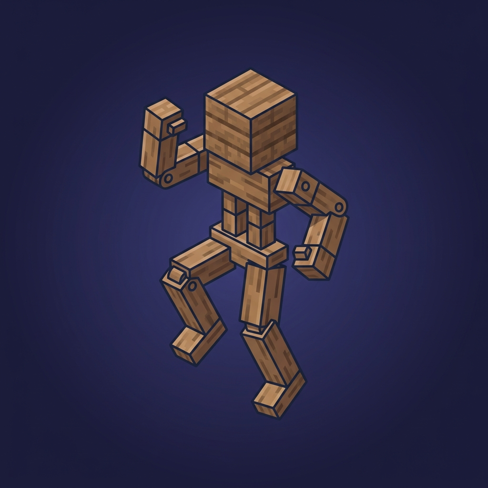
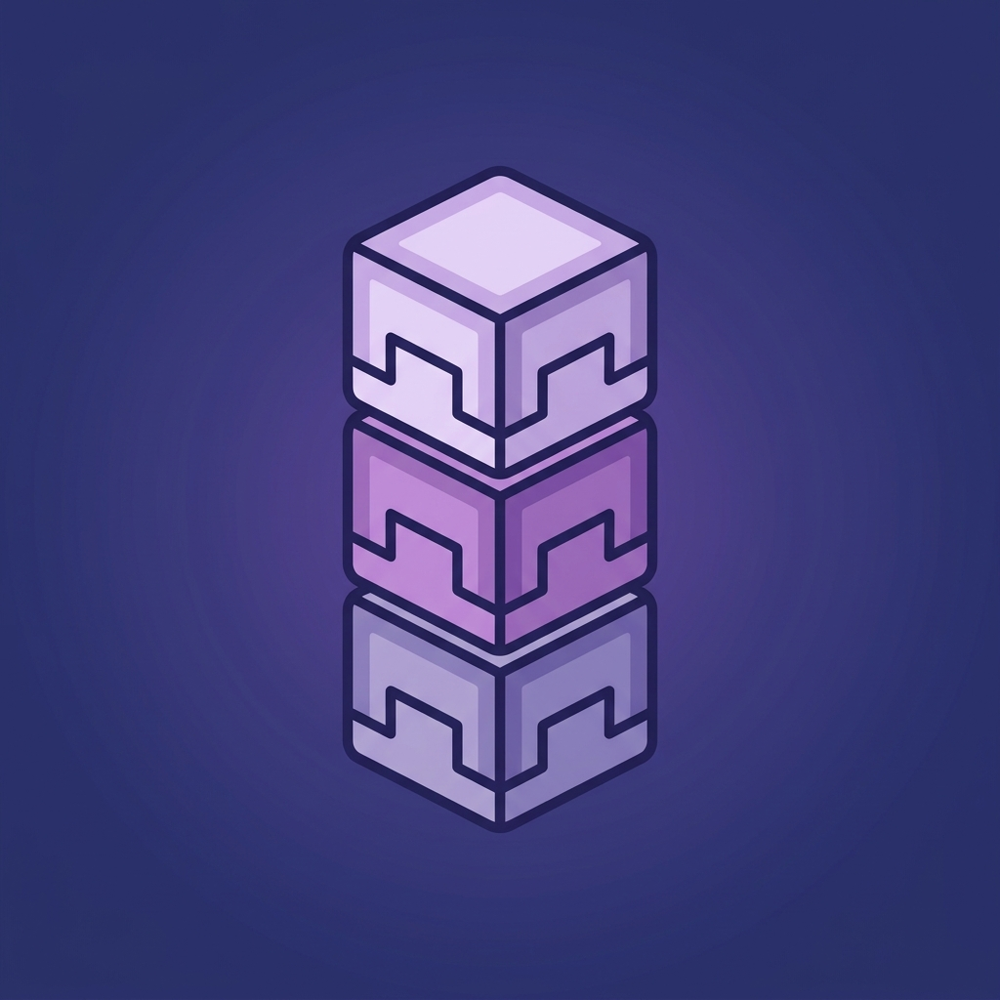

🎮 Portfolio Progetti
Ciao! Sono Manolo006. In questa sezione trovi i miei Datapack e Resource Pack per Minecraft, realizzati per migliorare il gameplay, ottimizzare la logistica e introdurre meccaniche uniche. Tutti i progetti sono scaricabili gratuitamente.

Armor Stand Poser
Strumento avanzato in stile debug stick per posare e animare qualsiasi Armor Stand in vanilla. Permette di ruotare testa, corpo e arti su ciascun asse (X, Y, Z), attivare braccia, dimensioni ridotte (Small/Mini) e rimuovere la pedana con il pratico comando /function armor_stand_poser:give.

Stackable Shulkers
Permette a tutte le Shulker Box vuote di impilarsi fino a 64 unità sia nel crafting sia nei drop/loot table di ogni colore. Elimina l'ingombro degli inventari e rivoluziona la logistica e i magazzini automatici vanilla senza richiedere mod client.
Sky Haste TexturePack
Resource pack personalizzato con modelli 3D esclusivi (es. custom compactors, golem, trash bin e blocchi custom), texture rifinite per armi ed armature e un'esperienza visiva fluida e ottimizzata per le modalità competitive e Skyblock.

Team Generator
Un datapack che genera automaticamente squadre equilibrate con assegnazione immediata di colori e gestione dei partecipanti. Ideale per tornei PvP, minigame e server personalizzati.

UHC Datapack
Progetto storico costantemente aggiornato: dota i mob di intelligenza artificiale avanzata con reazioni strategiche all'ambiente, introduce drop ribilanciati e una gestione completa per partite Ultra Hardcore ad alta sfida.